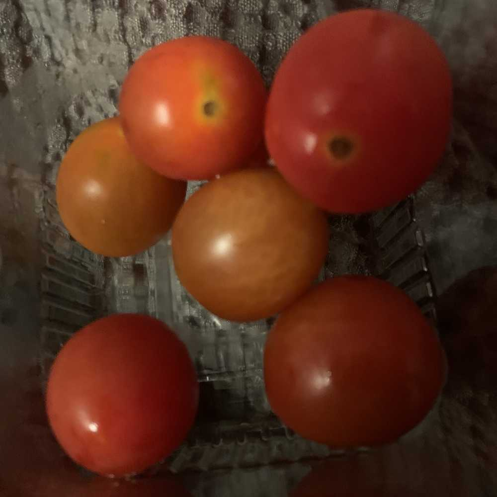

아니 세상에 저는 원래 잠이 좀 많잖아요..?
이것저것 하느라 거의 아침에 잠들긴 했지만
눈이 떠지더라구요
배가..고팠나..?ㅋㅋ
구래서 토마토를 먹었어용
아 토마토는 구냥 토마토가 아녀..
샤인마토라고 알아?!
나도 얼마 전에 알게 되었어!!
은비언니가 갑자기 토마토가 너무 달다는 거야
구래서 한입 먹어봤는데 진짜 너무 달았어ㅜㅜ
그 이후로 내 아침으로 자주 등장하지요
처음 먹었을 때는 품종 개량한 건 줄 알았는데
그게 아니라 천연감미료로 맛을 낸 거라고 하네욤?
이호도 먹어보세용
진짜 먹어본 토마토 중에 제일 달거야👍